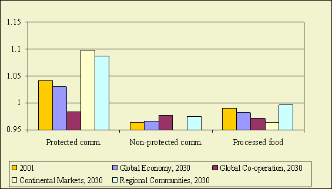

Highlights
Self-sufficiency of some protected commodities (sugar and cattle) in the EU
15 countries declines especially in the global scenarios (Global Economy, Global Cooperation). Self-sufficiency
of protected commodities in the EU12 countries increases especially in regional
(Continental Markets, Regional Communities) scenarios due to the accession to the EU15 market and the remaining
protection of the EU27 market.
The self-sufficiency of biofuel products (sugar, grains and oilseeds)
declines in the scenarios where the biofuel directive is implemented.
Figure 1 - Self sufficiency in EU15
Self-sufficiency of some protected commodities (sugar and cattle) in the EU
15 countries declines especially in the global scenarios (Global Economy (A1), Global Cooperation(B1)).
Future developments
The general tendency is that the self sufficiency of some protected commodities
(sugar, beef and to a lesser extent dairy) declines for the EU15 and the self-sufficiency
of non protected products (horticulture, pork and poultry) increases (see, Figure
S1). This is most profound in the liberalisation scenarios.
The self-sufficiency of biofuel products (sugar, grains and oilseeds) declines
in the scenario's where the biofuel directive is implemented.

Figure 2 - Self sufficiency in EU12
Self-sufficiency of protected commodities in the EU12 countries increases especially
in regional (Continental Markets, Regional Communities) scenarios due to the accession to the EU15 market and the
remaining protection of the EU27 market.
Explanation
Self sufficiency of protected commodities increases especially in non-liberalisation
scenarios. Accession to the larger market of the European Union (trade creation)
and the existing CAP facilities increases production and self-sufficiency in
the EU12. This is most pronounced in the Regional communities (B2 )scenario
where the EU25 market does not integrate further with the rest of the world.
In the Continental market (A2) the impact of the preferential access of the
EU12 to the EU15 declines because the US get the same preferential access. Another
aspect is the lower economic growth in the EU12 in this scenario that implies
also a smaller increase in demand.
Policy effects
CAP policies
Reduction of market and domestic support in the EU15 decrease the self-sufficiency
of protected commodities and increase the self-sufficiency of unprotected commodities.
Introduction of the CAP policies after enlargement increase the self-sufficiency
of protected commodities in the EU12.
Biofuel policies:
The self-sufficiency of biofuel products (sugar, grains and oilseeds) declines
in the scenario's where the biofuel directive is implemented.
Most important drivers
Agricultural and biofuel polices
Used methodology
LEITAP modeling output